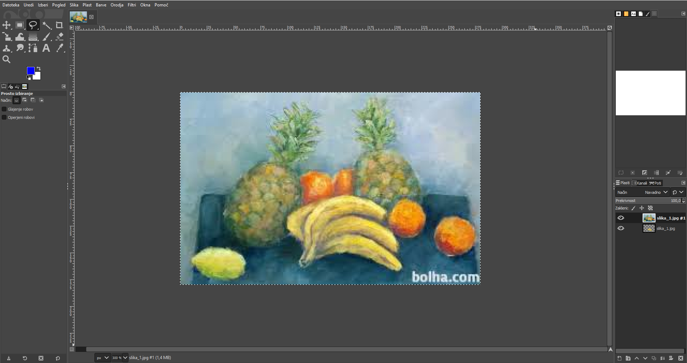
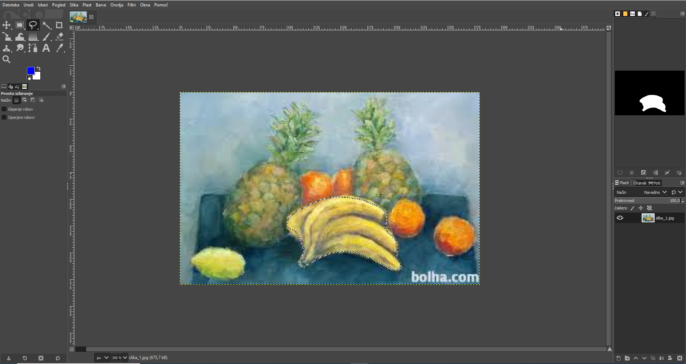
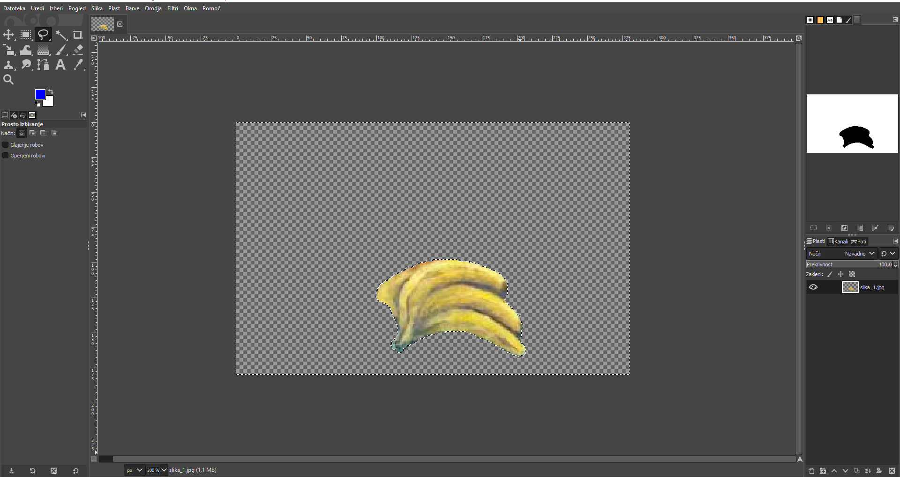
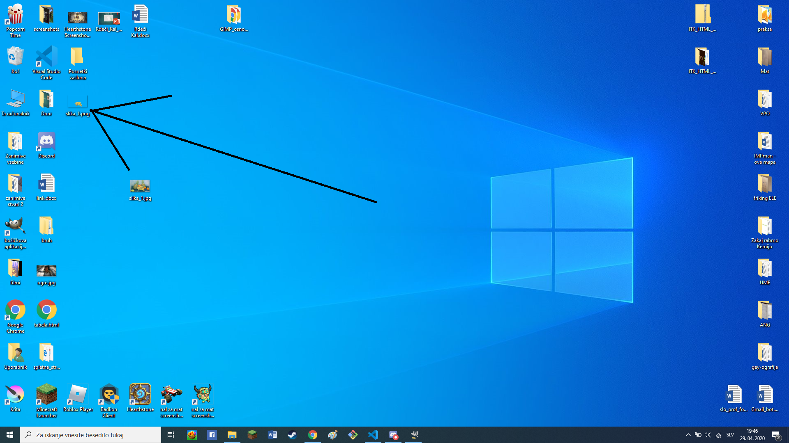

GIMP je zastonj aplikacija narejena za urejanje slik/fotografij.
Je tudi dobra zamenjava za stvari kot npr. Adobe Photoshop za ljudnji, ki niso tako zainteresirani v uporabo programov za urejanje slik, da bi plačali za zanj a kljub temu še vedno želijo poskusiti.
¸
Kljub temu, da je program zastonj je še vedno zmožen veliko; spodaj je prikazan proces za kaj jaz najraje uporablam GIMP - izdelovanje fotografij s prozornim odzajem:
1. Odpremo fotografijo: Datotoka/Odpri/Izberite željeno sliko/Odpri

2. Jo obrežemo: Orodje za prosto izbiranje/Obrežemo željen del fotografije

Izbran je notranji del fotogrfije, če tega ne želite izbrisati kliknite: Izberi/Preobrni
Ko imate izbran tisti del fotografije, ki se ga želite znebiti izbran pritisnite CTRL + X

3. Izvozi fotografijo: datototeka/Izvozi kot/Izvozi (končnica imena mora biti .png drugače se prozornost nebo ohranila)/Izvozi
